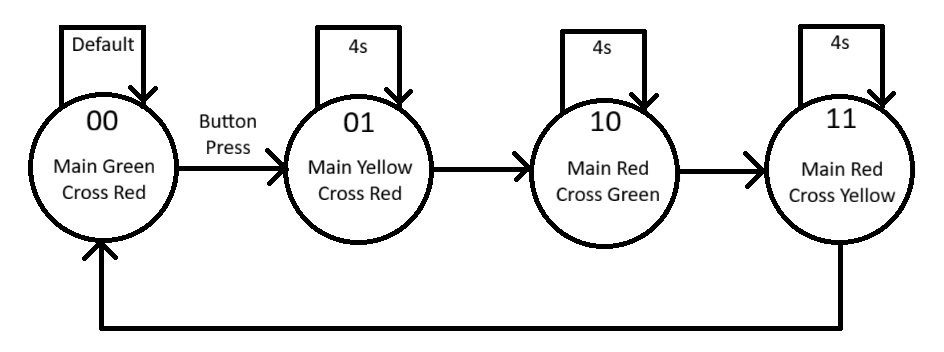
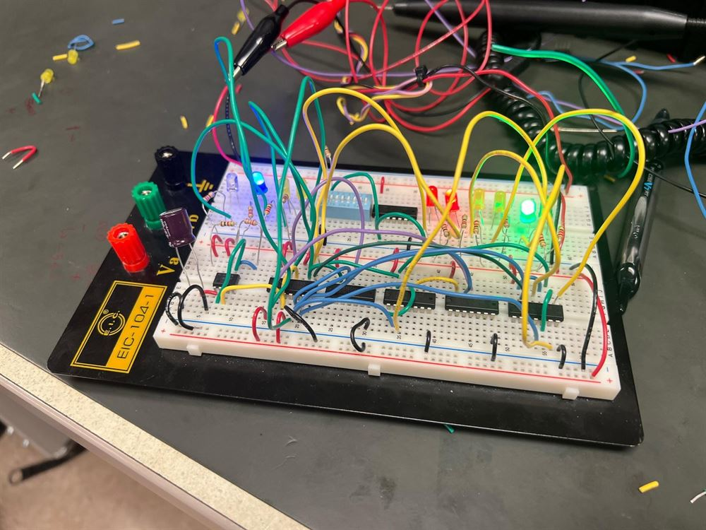

Project · Digital Logic
Fall 2025 · Digital Logic Design Lab
Traffic Light State Machine
A demand-driven traffic light: the main road stays green until a pedestrian presses the crosswalk button, then the lights cycle every 4 seconds.
ToolsD flip-flops · logic gates · LM555 timer · Boolean excitation equations
- 4 states2 D flip-flops
- ≈3.95 sLM555 clock period
- D1 = Q1 ⊕ Q0excitation equation
- 1 bent pinroot cause found


What I did
- Designed it in the pre-lab: the state diagram, the excitation equations, and 555 timing values (1 kΩ, 28 kΩ, 100 µF).
- Built it from logic gates, flip-flops, and a 555 astable clock, and added a switch as the crosswalk button.
- When it cycled through only two states, we checked wiring and power, then found and fixed a missing connection.
My role
Team of two. Pre-lab design, build, and root-cause reasoning.
Debugging
It still failed, until my partner's logic probe on the 555 output made it work. I reasoned the probe was supplying a missing ground. A new 555 fixed it; the old one had a bent ground pin.
Takeaway
A strange symptom is a clue: ask what changed and why.